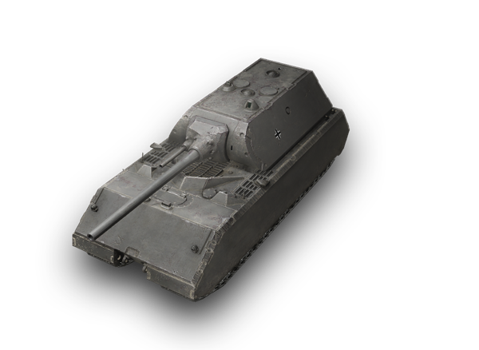

<!DOCTYPE html>
<html lang="en">
<head>
    <meta charset="UTF-8">
    <meta name="viewport" content="width=device-width, initial-scale=1.0">
    <title>Деталі Танка</title>
    <link rel="stylesheet" href="style.css">
</head>
<body>
    <div class="container">
        <div id="tank-info" class="tank-description">
            <!-- Тут буде змінюватись інформація -->
        </div>
    </div>

    <script>
        // Отримуємо параметр 'tank' з URL
        const urlParams = new URLSearchParams(window.location.search);
        const tankId = urlParams.get('tank'); // Отримуємо значення tank з URL

        const tankInfo = document.getElementById('tank-info');
        let tankDetails = '';

        // Змінюємо інформацію в залежності від танка
        if (tankId == '1') {
            tankDetails = `
                
                <div>
                    <h1>T-42A</h1>
                    <p><strong>Тип:</strong> Середній танк</p>
                    <p><strong>Походження:</strong> СРСР</p>
                    <p><strong>Екіпаж:</strong> 4</p>
                    <p><strong>Озброєння:</strong> 100-мм 2А24</p>
                    <p><strong>Швидкість:</strong> 50 км/год</p>
                    <p><strong>Двигун:</strong> 500 к.с.</p>
                    <p><strong>Масивність:</strong> 33 т</p>
                    <p><strong>Рік розробки:</strong> 1940</p>
                    <p><strong>Кількість вироблених:</strong> 500+</p>
                    <p><strong>Особливості:</strong> Один з перших серійних середніх танків СРСР, розроблений для швидких наступальних операцій.</p>
                </div>
            `;
        } else if (tankId == '2') {
            tankDetails = `
                
                <div>
                    <h1>Maus</h1>
                    <p><strong>Тип:</strong> Сверхтяжёлый танк</p>
                    <p><strong>Розробник:</strong> Фердинанд Порше</p>
                    <p><strong>Екіпаж:</strong> 6</p>
                    <p><strong>Озброєння:</strong> 128 мм KwK-44 L/55, 75-мм KwK-40</p>
                    <p><strong>Швидкість:</strong> 20 км/год</p>
                    <p><strong>Двигун:</strong> 1250 к.с.</p>
                    <p><strong>Масивність:</strong> 188,9 т</p>
                    <p><strong>Рік розробки:</strong> 1944</p>
                    <p><strong>Кількість вироблених:</strong> 2</p>
                    <p><strong>Особливості:</strong> Найважчий танк у світі, розроблений для знищення всіх типів ворожої броні, з величезним бронюванням та потужним озброєнням.</p>
                </div>
            `;
        } else if (tankId == '3') {
            tankDetails = `
                
                <div>
                    <h1>FV215B</h1>
                    <p><strong>Тип:</strong> Важкий танк</p>
                    <p><strong>Виробник:</strong> Royal Ordnance Factory</p>
                    <p><strong>Екіпаж:</strong> 4</p>
                    <p><strong>Озброєння:</strong> 120-мм L1</p>
                    <p><strong>Швидкість:</strong> 34 км/год</p>
                    <p><strong>Двигун:</strong> 810 к.с.</p>
                    <p><strong>Масивність:</strong> 65 т</p>
                    <p><strong>Рік розробки:</strong> 1960</p>
                    <p><strong>Кількість вироблених:</strong> 185</p>
                    <p><strong>Особливості:</strong> Британський важкий танк з відмінною мобільністю для своєї категорії, розроблений для підтримки піхоти та знищення ворожої броні.</p>
                </div>
            `;
        }

        // Додаємо відповідну інформацію на сторінку
        tankInfo.innerHTML = tankDetails;
    </script>
</body>
</html>
